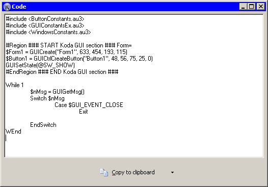

This is the final step of your work.

The arrow at the right of button allows you to select one of the three saving code modes:
Selected choice will be shown up as main button caption, and will be saved between the sessions.